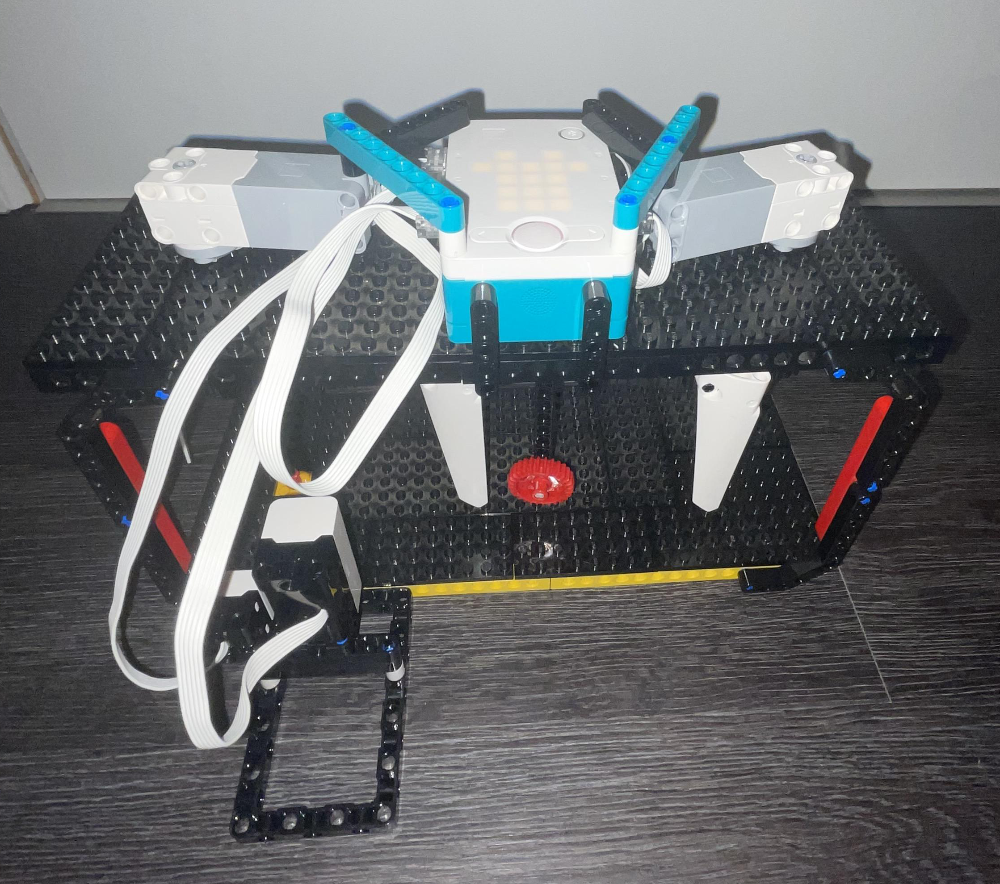

Introduction
Hello there! I am a student from Antwerp who almost graduated in STEM. For this course I needed to make a thesis,
to finish of my last year as a student. I had to come up with a project that had some social value.
I started to think, look around in my surroundings, searched for advise from my relatives,...
Eventually I came up with a project, that had some social value and would also be really handy in the catering industry (in which my dad is very active)...
Imagine you're entering a restaurant and the host asks you if you would like to put your jacket inside the cloakroom.
You are doubtful... If you give your coat away, there is a risk of it being robbed...
But if you take your coat with you, you would have to carry it with you the whole evening.
I found the perfect solution!
I present to you the Secure-Vestiaire-1.0 .
A secure cloakroom, insert your coat, get a code, enter your unique code when you need your coat back and voila your coat comes out!
(Off course, this is just a model, in reality it would be much bigger and closed of)
Supplies
For this project I worked with the Lego mindstorm robot inventor:
- Lego mindstorm 51515 (full box)
- Lego mindstorm Robot Inventor app (on your computer)
Step 1: Learning
To start off with a new project you always need to have enough knowledge of the system that you are going to work with.
The mindstorm robot inventor app let's you code with Python. Luckily for me, I had already gone through a course of the basics of Python in the first semester.
But only learning Python was not enough. I started of the first months,
learning how to work with the lego mindstorm robot.
For this I suggest you watch
https://www.youtube.com/watch?v=Xj3mUHbb4Z0&list=PLj_k_RHuTqaUojvL-J76TVjG2QEulzjU8&index=18 .
It's a series to learn the basics of using python inside the robot inventor app.
Step 2: Prototype1
To complete my project, I worked with several prototypes. I suggest you do the same. For my first prototype I needed to complete the following:
- Make a structure where I was able to place the hub on top and make use of motors to let a conveyer belt move around in 'the air'. (this is the structure seen in the images)
- If I clicked the right button, the band needed to move to the right.
- If I clicked the left button, the band would stop.
Step 3: Prototype 2
For the second prototype I needed to complete the following:
- Make a counting system: if right was pressed count = count + 1
- Make a enter button: if left was pressed the belt would move for seconds(count)

Step 4: Prototype 3
In prototype 3 I inserted some very important sensors: the distance sensor and the color sensor.
I threw out the counting system with the buttons and made a system that would work everywhere. Let the belt move and wait for the color sensor to see red
Use the color sensor (and a red item on the band):
If the color sensor sees red: count = 0
If the distance sensor sees an item close: the count = count +1
With these sensors I was able to identify the count of 'slots' as I call them. These would correspond to clothing hangers in real life.
Step 5: Prototype 4
The following prototype is very complicated. I implemented dictionaries (to make a database of the codes for the slots), a randomizer to make a code, and a way to let the customer insert the code.
I put all of these together and organized them in functions, so that I could call them multiple times (corresponding with multiple customers).
After a lot of effort it finally worked.
Step 6: Final Product
To finish off the project I worked on the user interface. For this I worked with the light matrix on the hub.
To learn how to work with the light.matrix I would suggest to use 'the help book' on the right side of your programming site.